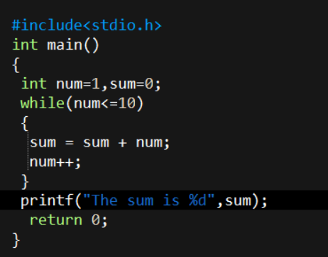
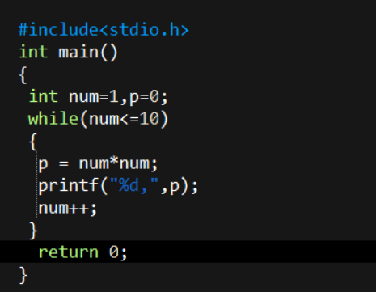
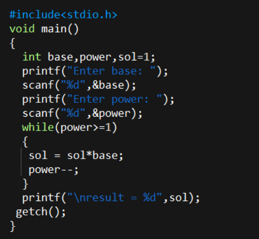

WhiteDevil
C-Programming
1. Write a C programe for printing "Hello World".

2. Write a C programe to add two given numbers.

3. Write a C programe to add, subtract, multiply and divide two numbers.

4. Write a C programe to assign length and breadth and find the area of rectangle and perimeter of rectangle.

5. Write a C programe to assign 5 numbers and find there sum and average (display average as result).

6. Write a C programe to assign Principle, rate and time and find simple intrest.

7. Write a C programe to display the largest among 5 entered numbers.

8. Write a C programe to enter any character and check whether it is uppercase, lowercase, digit or any symbol.

9. write a C programe to enter any character and check whether it is vowel or contstant.

10. Write a C programe to find sum of first 10 natural numbers.

11. Write a C programe to print pattern 1, 4, 9, 16,...,100.

12. Write a C programe to input any number and write its table.

13. Write a C programe to enter 10 numbers and check whether they are even or odd. Also count total number of even and odd and sum of evens and odds.

14. Write a C programe to input any number and reverse it.

15. Write a C programe to input any number and count the digits.

16. Write a C programe to input any number and find the sum of digits.
17. Write a C programe to input any number and check whether it is armstrong or not.

18. Write a C programe to input any number and check whether it is prime or not.

19. Write a C programe to input any number and find it's factorial.

20. Write a C programe to input two numbers as base and power and find it's solution.
